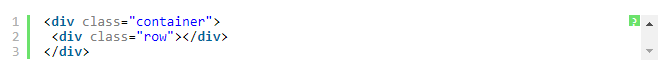
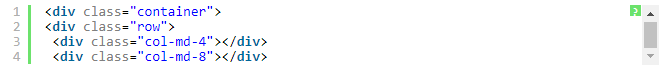
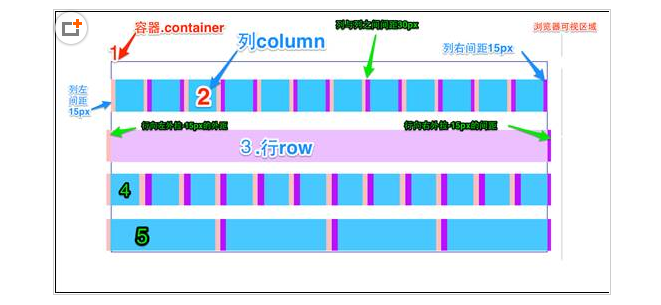

如何使用bootstrap栅格系统？
小课堂【北京-WEB-A组】
分享人：刘仁瑞
目录
1.背景介绍
2.知识剖析
3.常见问题
4.解决方案
5.编码实战
6.扩展思考
7.参考文献
8.更多讨论
1.背景介绍
Bootstrap，来自 Twitter，是目前最受欢迎的前端框架。Bootstrap 是基于 HTML、CSS、JAVASCRIPT 的，它简洁灵活，使得 Web 开发更加快捷。
Bootstrap提供了优雅的HTML和CSS规范，它是由动态CSS语言less写成。Bootstrap一经推出后颇受欢迎，一直是GitHub上的热门开源项目，包括NASA的MSNBC（微软全国广播公司）的Breaking News都使用了该项目。 国内一些移动开发者较为熟悉的框架，如WeX5前端开源框架等，也是基于Bootstrap源码进行性能优化而来。
这里需要说明一下最新的Bootstrap4，是采用sass来编写的。
2.知识剖析
网格系统的实现原理非常简单，仅仅是通过定义容器大小，平分12份(也有平分成24份或32份，但12份是最常见的)，再调整内外边距，最后结合媒体查询，就制作出了强大的响应式网格系统。Bootstrap框架中的网格系统就是将容器平分成12份。
在使用的时候大家可以根据实际情况重新编译LESS（或Sass）源码来修改12这个数值（也就是换成24或32，当然你也可以分成更多，但不建议这样使用）。
1.行(.row)必须包含在容器（.container）中，以便为其赋予合适的对齐方式和内距(padding)。
2.在行(.row)中可以添加列(.column)，但列数之和不能超过平分的总列数，比如12。如：
3.具体内容应当放置在列容器（column）之内，而且只有列（column）才可以作为行容器(.row)的直接子元素
4.类似 .row 和 .col-sm-4 这种预定义的类，可以用来快速创建栅格布局。
5.通过设置内距（padding）从而创建列与列之间的间距。然后通过为第一列和最后一列设置负值的外距（margin）来抵消内距(padding)的影响

从上面的截图可以看出来，Bootstrap针对不同尺寸的屏幕（包括手机、平板、PC等等）设置了不同的样式类，这样让开发人员在开发时可以有更多的选择。根据我的理解：如果在一个元素上使用多个不同的上面的样式类，那么元素会根据在不同尺寸选择最合适（匹配最理想的）的样式类。简单的举例进行说明：比如在一个元素上我们使用了两个样式类：.col-md-和.col-lg。可以对照上面的截图来看
第一种情况：尺寸>=1200px;那么会选择.col-lg。
第二种情况：尺寸>=992px 并且尺寸<=1200px;那么会选择.col-md。
第三种情况：如果尺寸<992px;那么这两个样式类都将不会作用于元素上
3.常见问题
如何设置5列占满宽度？
格栅系统的15px有什么作用？
4.解决方案
每列设置宽度20%
也就是100%除以列数。
5.编码实战
6.扩展思考
格栅系统布局的是通过什么方法实现的？
7.参考文献
参考二： bootstrap中文网
参考三： 博客园
参考四： 博客园
8.更多讨论
鸣谢
感谢大家观看
By 刘仁瑞